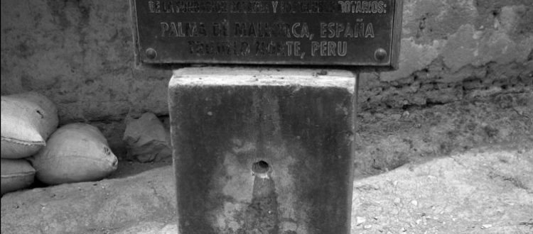

The Problem
There's something rotten in the state of the humanitarian sector. And it isn't the hearts of the men and women working tirelessly to find solutions for problems like poor water quality or sanitation--through no fault of their own, some solutions haven't stayed permanent.
Projects like digging a well in an impoverished African village or building latrines for a small community in Latin America can be life-changing for the people affected--but too often we count the installation a success without checking in on the aftermath; and we're finding that our solutions aren't as sustainable as we'd hoped. Pictured to the right is a water tapstand installed in Peru--unused and beginning to corrode. There are countless stories of similarly unused projects: wells dried up, sewage systems untouched, community maintenance groups disbanded.
What's going wrong? There's not an easy answer--each community's story is different, and so are the factors affecting the sustainability of new developments. That's where the process of Iterative Factor-Mapping and Learning (IFML) comes in.